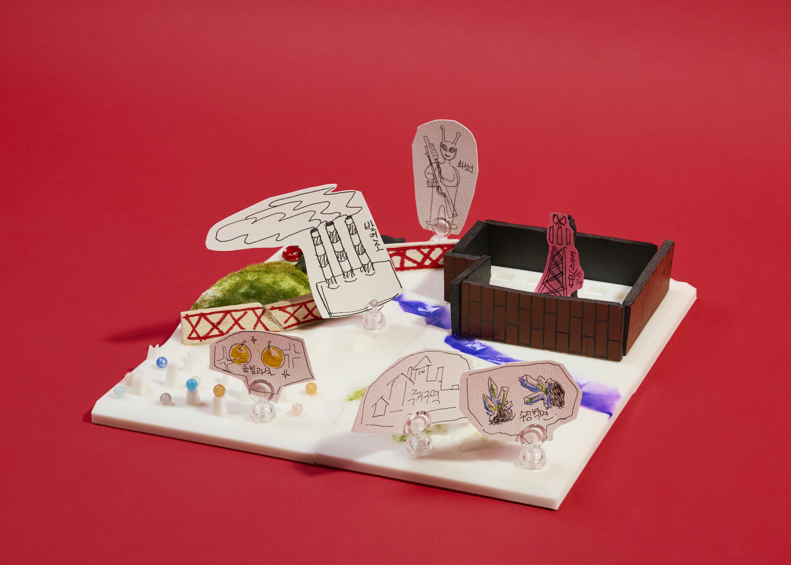
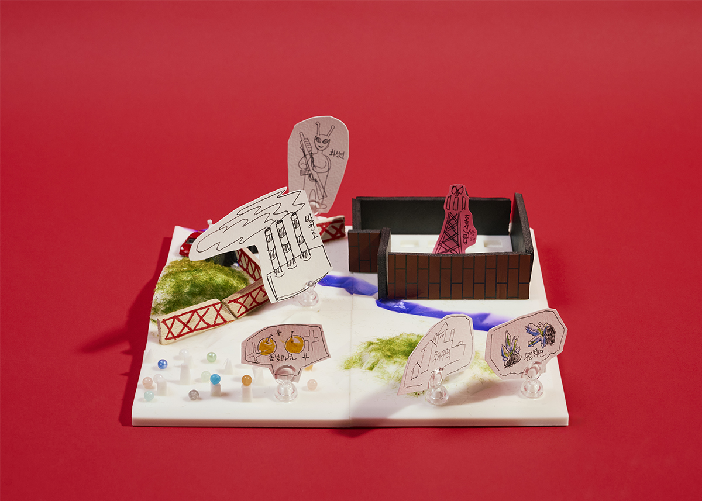

제9구역: 빵상
지구인 분석 결과
● 지구인의 장점:
1. 지구인은 정보 통신 과학 기술로 발전과 발명을 할 수 있고, 활용 능력이 뛰어나다.
2. 의사소통을 통해 협력하여 기술을 제작할 수 있다.
3. 정보 통신 기술을 가져와 화성인과의 소통을 이루려고 할 것이다.
● 지구인의 약점:
1. 산소를 이용해야 한다.
2. 사회적 동물로서 의사소통이 불가능해진다면 고독해진다.
화성인으로서의 입장
무력을 통한 급진적 저항주의(배척)
지구인들이 화성에 남은 자원을 전부 소모하고 무분별한 개발을 진행해 화성의 환경을 파괴할 것으로 예상되므로 9구역에 침략하려는 지구인들을 배척한다.
전략명: 훼방꾼 배척 계획
지구인의 우주선이 5구역에 착륙해서 운하를 따라서 이동할 것으로 예상한다. 고대 도시를 군사기지로 이용하고, 고대 도시의 정중앙에 전파 통신 방해 기기 설치하여, 지구인들의 정보통신기술을 사전에 차단한다. 운하 밑 수정 벽면 지역은 주거 공간으로 이용하고 금빛 과실 구역에서는 농사를 지으며, 9구역 끝 언덕 사이에는 바리케이드를 설치. 바리케이드 앞쪽에 군사를 주둔시키고 지구인이 접근할 시 위협한다. 도망을 간다면 놓아 주고 덤비면 사살한다. 또한 언덕 끝에 지구인들이 접근하지 못하게 전기 펜스를 설치한다. 전기는 운하와 수정 벽면 사이에 발전소를 설치하여 공급한다.
곡 제목: 지구인들에게 하는 통보
Five zone, touchdown, 운하 slide, we ride,
고대도시 fortress, 절대 못 뚫어 our side.
재밍 on, 신호 gone, static all night,
수정 밑 hideout, 금빛 과실 bright.
Nine zone, barricade, don't cross that line,
전기 펜스 spark, 발전소 power shine.
Hold that ground, no cap, we don't fold,
우리 존, 우리 코드, 끝까지 control.